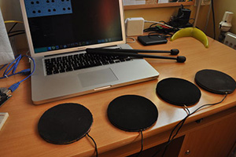
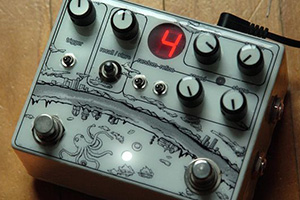
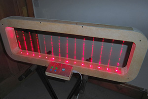

ELECTRONIC DRUM KIT
The Arduino drum set was cool, but the sounds it made are not as great as the sounds of a real drum set. This project is for those of you who are serious about making music.

ELECTRONIC DRUM KIT
The Arduino drum set was cool, but the sounds it made are not as great as the sounds of a real drum set. This project is for those of you who are serious about making music. By the time you’re done with the project, you’ll have your own full-scale electronic drum kit, for less than $150, that makes “real” drumming sounds.
DIY STEP SEQUENCER
Auduino Step Sequencer is a DIY project that shows you how to build an improved version of a grain synthesizer. The system will let you program 8 different sounds to play in a loop. It’s more like a low-tech version of the MIDI controller, but the detailed project offers more details for understanding how it works, which makes it ideal for beginners.Auduino Step Sequencer is a DIY project that shows you how to build an improved version of a grain synthesizer. The system will let you program 8 different sounds to play in a loop. It’s more like a low-tech version of the MIDI controller, but the detailed project offers more details for understanding how it works, which makes it ideal for beginners.
Auduino Step Sequencer is a DIY project that shows you how to build an improved version of a grain synthesizer. The system will let you program 8 different sounds to play in a loop. It’s more like a low-tech version of the MIDI controller, but the detailed project offers more details for understanding how it works, which makes it ideal for beginners.
Pedal DIY para principiante
El fuzz face usa 2 transistores, 4 resistencias y 3 condensadores... y fijate lo que la gente paga por ello..aveces una cosa simple es mas efectiva... aunque eso si, no tengo ni idea de como sonara esto.

Es muy facil que no encuentres lo que buscas.
con el diy como en todo, no es facil hacer las cosas a la primera... en las tiendas generalmente no tienen un surtido de componentes enorme, a no ser casos concretos... y muchas veces en los pedales y asi hay componentes mas dificiles de encontrar como puede ser un operacional concreto, una ldr en concreto, cosas de germanio..
cuando llevas ya un tiempo en el diy, terminas por tener unas determinadas tiendas donde acudir para comprar depende que componentes.
Sin ir mas lejos, conseguir el conmutador de pie, puede ser complicado en una tienda normal... aqui en bilbao la hay en una, pero no siempre tienen y hace unos años, no sabian ni que era lo que les
en fin, que no desesperes y poco a poco... tambien es parte de la miga de diy conseguir todos los componentes... ademas, ahora con internet, si se te cruza un componente, te lo traen a casa...
Harpa Laser
Harpa Laser has a strong impact on the audience, engaging people to happily interact. This is even more so evident with children and younger audiences as they feel they are interacting with something magical.

The structure was conceived to impose a sense of greatness: 2.3-meters tall iron structure and more than 70 Kg of weight, the object itself became doubtlessly imponent. To make it work, more than one hundred hours of labour were necessary: planning, replanning, wiring, soldering, testing and making sure it was safe. The result is a spectacular interactive installation that presents itself as a beautiful instrument, sound feeded by Imaginando's award winning virtual analog synthesizer DRC, running on a single computer board.Harpa Laser can be remote controller by DRC allowing it sound to anything that can be synthesized with DRC sound engine.
Each laser beam was programmed to play a note from a minor scale where the outer and longer laser beam would play a lower pitch. A random offset to the notes could be easily made by simply interacting with the last and shorter beam, providing variation while playing.